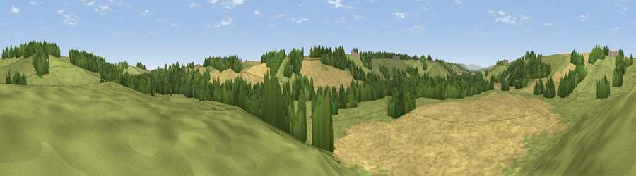

Carston Hill
#38360 in England · top 75% of its area beats it · near KearbyThe view, rendered

A 360° render of this exact spot computed from the terrain model, tree cover and land cover — summer colours, afternoon light, calibrated against photographs of famous viewpoints. Real trees, hedges and buildings will differ in detail.
The panorama
Grey silhouette: terrain skyline in each direction (720 bearings, Earth curvature and refraction included). Dashed green: skyline with trees (+15 m) and buildings (+8 m) as obstacles. Blue strip: how far the ground is visible on each bearing.
Where the view opens
Wedge length = distance to the farthest visible ground on that bearing (vegetation-aware). Rings at 10, 25 and 50 km.
What fills the view
46% cropland · 37% grassland · 17% woodland
Angular shares of the visible panorama (visual magnitude), not map area. Landscape diversity 0.45 (0–1 Shannon).
Key numbers
More beautiful places nearby
The staircase of upgrades: each row has a higher view potential than everything closer. Driving times are estimates from straight-line distance, calibrated against real road routing — check an actual route before setting out.
| Place | Direction | Drive | Score |
|---|---|---|---|
| Viewpoint near East Keswick | SSW · 1 km | ~3 min | 48.5 |
| Viewpoint near Rigton Hill | ESE · 3 km | ~7 min | 55.3 |
| Viewpoint near Kirkby Overblow | NW · 3 km | ~8 min | 63.5 |
| Viewpoint near North Rigton | WNW · 9 km | ~18 min | 66.6 |
| Rawdon Trig point | WSW · 15 km | ~27 min | 69.6 |
| Surprise View | W · 15 km | ~27 min | 70.7 |
| Rawdon Billing | WSW · 15 km | ~27 min | 73.0 |
| Viewpoint near Otley | W · 16 km | ~28 min | 77.5 |
53.91095, -1.45689 · source: osm peak · position refined by local search. Computed location — check access rights before visiting.